The card for July 24 brings three sides that offer value across different tiers of the board. We're looking at a live underdog in San Diego, a motivated bounce-back spot for the Astros, and a reliable bullpen-backed team in Cleveland. Here's how it breaks down:
The Padres are on the road facing a lefty, which is where their offense tends to thrive. San Diego has posted a top 10 OPS against southpaws this season, and Yu Darvish gets the ball today. When healthy, he's still capable of going deep and neutralizing a lineup that doesn't hit his splitter well. The Padres bullpen has been better than league average over the last two weeks, and the price at +134 gives enough cushion for volatility.
The Astros are laying a short number at -127 in a spot where their starting pitcher has thrown quality starts in four of his last five outings. Houston's offense hasn't been dominant, but they've done their job against mid-tier pitching and still rank top 5 in hard-hit rate. The bullpen is a concern if overused, but it's in decent shape going into today.
Cleveland comes in as a modest favorite at -114 with a solid pitching edge. Their starter has a better FIP and walk rate than the opposing arm, and Cleveland's bullpen is ranked top 3 in ERA and WHIP over the past month. In close games, they've been winning more often than not thanks to situational hitting and bullpen efficiency. This is a team built to win tight contests.
Nothing fancy here, just three numbers that offer value when cross-checked with matchup data and current market pricing.
Final card:
Padres +134
Astros -127
Guardians -114
MLB Picks 7/23/25: Rare 2-Unit Bomb on Rangers
Posted: July 23, 2025 – 1:48 AM
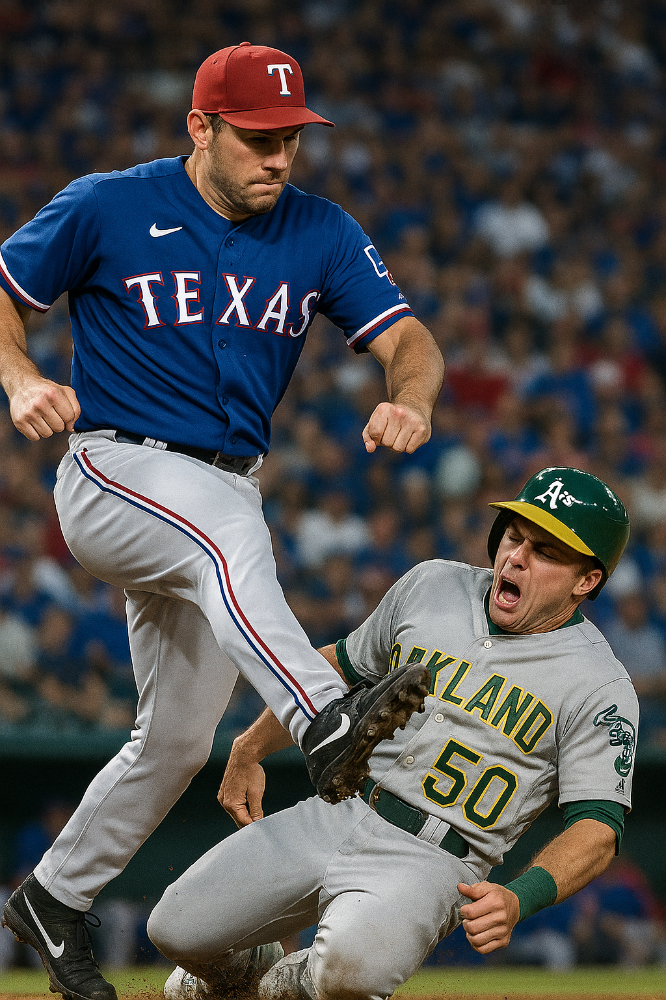
This is the first time in a while we've gone with a two-unit play, and for good reason. We're sitting at 1 and 0 on the year with these rare spots, and we're looking to move to 2 and 0 behind a strong edge in Texas. The Rangers are back home, where they've been solid all season, and they send Patrick Corbin to the mound. Corbin enters this matchup with a 3.91 ERA and has looked sharp in July. In his most recent outing, he tossed five and two-thirds scoreless innings and struck out six. He's doing a better job keeping the ball on the ground and limiting hard contact early in counts.
Oakland counters with JP Sears, who has a 5.17 ERA and has given up a .274 opponent batting average on the year. Sears has had particular trouble with left-handed hitters and hasn't shown much consistency on the road. The A's are just 22 and 30 away from home this season and continue to rank near the bottom of the league in runs scored per game. Texas, on the other hand, is 30 and 20 at home and has won seven of its last ten. They've been getting production from all over the lineup lately and are simply in a better rhythm on both sides of the ball. The Rangers have the bullpen edge too, which gives them a clear advantage if this turns into a close game late.
We're not the type to throw around two-unit plays every day. This is a spot where everything lines up. The home form, the pitching matchup, the splits, and the momentum are all pointing the same way. It's a full confidence swing, and we're riding with Texas to deliver.
Now here's the rest of the card for July 23rd:
Brewers and Mariners First 5 Innings Under 4.5 at -140
Guardians First 5 Innings -140
Padres -148
Mets and Angels First 5 Innings Over 4.5 at -135
In Seattle, Quinn Priester takes the ball for Milwaukee with a 2.65 ERA. He's been efficient and keeps the ball in the yard. The Mariners counter with Luis Castillo, who holds a 3.21 ERA and has been strong at home. Both starters have been consistent this month, and the under trend in first five innings has been favorable when these types of arms match up. Milwaukee has gone five and five to the over in their last ten, while Seattle has hit the over in seven of their last ten, but many of those runs have come late in games. This sets up for a lower scoring start before the bullpens get involved.
Cleveland continues to be one of the hottest teams in baseball, winning eight of their last ten. They're back home against Baltimore and face Zach Eflin, who comes in with a 5.95 ERA. Eflin has been getting hit hard and has not been able to locate consistently in recent outings. The Guardians have been very good in the early innings this season, and they're now 27 and 21 at home overall. Cleveland's lineup is putting together quality at-bats and finding ways to score early, while the bullpen continues to hold leads when it has to. This feels like another strong spot for them in the first five innings.
The Padres are on the road against Arizona, and they've looked much more consistent lately. They've outscored opponents by 11 runs since the All-Star break and have tightened up the back end of their bullpen. San Diego's offense is starting to come through in key spots, and they've won six of their last ten. Arizona has hovered around .500 but hasn't put together a strong stretch. They've struggled in close games and haven't been able to rely on their pitching to hold up. San Diego has the edge in multiple areas and should be in a good spot here if they play clean baseball.
And finally, we've got what could be a high-scoring game in Anaheim between the Mets and Angels. Both teams come into this matchup trending toward the over. The Mets have gone seven and three to the over in their last ten, and the Angels bullpen has an ERA north of five over the last month. This game features two starters who have been inconsistent and allow a lot of traffic on the bases. Both offenses are capable of putting up crooked numbers, especially early. The weather is warm and conditions favor the hitters, so the first five innings over makes a lot of sense given how these teams have been swinging the bats.
We're going into this slate with five solid angles, led by the Rangers as our rare two-unit bomb. It's all backed by real data, live trends, and matchup context. Let's see if Texas can take care of business and set the tone for the day.
• MLB Best Bets Today: First 5 Innings Targets for July 22, 2025
Posted: 11:06 PM — July 23, 2025
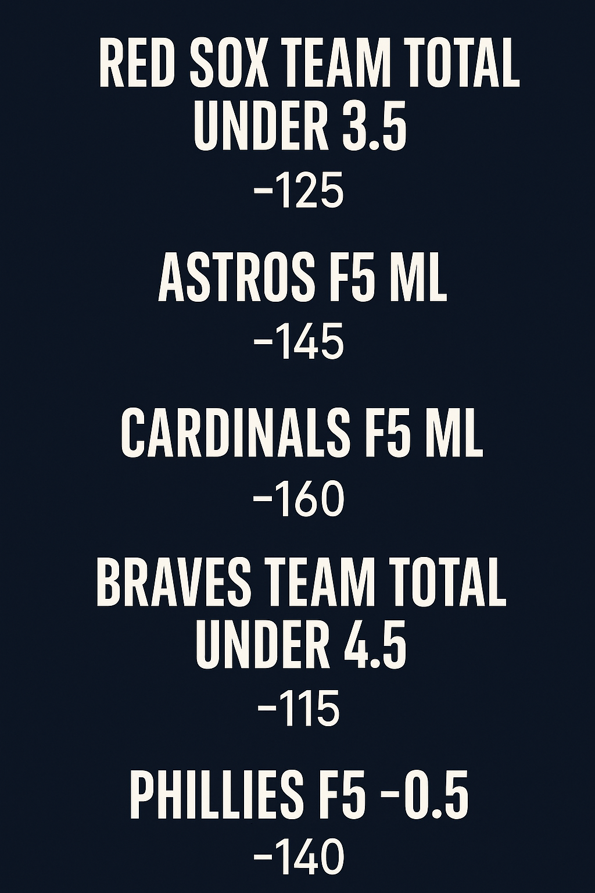
Looking ahead to Tuesday's slate, a handful of early edges stood out based on starting pitcher splits and situational trends. We've got five picks that all share a common theme—favorable matchups in the first five innings or with team totals that look inflated.
Boston faces Cristopher Sanchez in Philly, and that's a tough task right now. Sanchez has been carving through lineups early, and Boston's offense hasn't traveled well this season. The number is low, but under 3.5 still feels playable.
The Astros draw a beatable arm in Arizona and have Framber Valdez going for them. We're backing them in the first five. Valdez doesn't mess around—he works fast and puts up zeroes early, especially against weaker lineups.
St. Louis heads into Coors Field with Erick Fedde, who's quietly been reliable early. Colorado's starter, meanwhile, is rocking an ERA over 11. This play is more about the Rockies being a disaster than the Cards being elite.
We're also taking the Braves under 4.5 runs against Atlanta's rookie opponent. The line feels about a run too high given how Atlanta's bats have looked lately, and the starting matchup doesn't help their case.
Lastly, we're going with the Phillies on the first five run line. Richard Fitts is on the hill for Boston and it's a bad setup for him. Philly should be able to get to him early while Sanchez gives them breathing room on the other side.
Red Sox Team Total Under 3.5 (–125)
Astros First 5 Innings ML (–145)
Cardinals First 5 Innings ML (–160)
Braves Team Total Under 4.5 (–115)
Phillies First 5 –0.5 (–140)
Five edges, all backed by real numbers. Let's see how it plays out.
• The Importance of Line Movement and Steam
Posted: 10:56 PM – July 20, 2025
This is one of those strange early moves where all the steam is coming in on the Nationals, but the pitching matchup doesn't really justify it. The market hit them hard overnight and again this morning, despite facing a lefty that's been solid lately. Whenever you see sharp money come in two waves like that, there's usually respected info or a confirmed angle behind it.
Sometimes in baseball betting, you'll see a line open and then instantly move within minutes. This type of early, aggressive shift is often caused by respected bettors or betting syndicates slamming one side. When a sportsbook reacts quickly, it usually means they respect the source of that action.
This is where the concept of steam comes in. Steam refers to a sudden and widespread line move, usually triggered by sharp money or breaking news. While you shouldn't rely solely on steam to make your picks, it can be a powerful tool to add to your arsenal. Understanding when and why a line moves can give you valuable insight into where the smartest bettors are placing their money.
• Five Saturday Picks – July 19, 2025
Posted: 2:08 AM – July 19, 2025
We've got five MLB picks on the board for Saturday, and all five feel backed by real logic, strong matchups, and trustworthy arms. Let's go through each one and break it down.
Giants vs Blue Jays Under 9 (-166) – Logan Webb has been the most consistent pitcher on the Giants staff, coming into this start with a 2.95 ERA. Facing the Blue Jays, who are only 24th in runs scored against righties, this shapes up as a tough matchup for the bats. Eric Lauer counters with a 3.75 ERA and should handle the Giants' inconsistent offense. Both bullpens rank in the top half in ERA and WHIP. The weather in Toronto projects neutral, and the total opened 9 but quickly saw sharp action on the under.
Giants/Blue Jays First 5 Innings Under 4.5 (-154) – Same logic applies, but isolated to the early part of the game. Webb tends to go deep and doesn't give up much early. Lauer has allowed just two first-inning runs in his last five starts. This matchup has 1–1 written all over it through five.
White Sox First 5 Innings -105 – Adrian Houser's 1.58 ERA is legitimate, and the Pirates have scored the fewest runs in the league since the break. They've also struck out at the highest rate in that span. With a bottom-tier OPS against right-handers, Pittsburgh should struggle early. Chicago's offense is no juggernaut, but against a soft-throwing rookie like Mike Burrows, they don't have to be. The value lies in Houser and a possible 2–0 or 3–1 edge after five.
Tigers First 5 Innings -110 – Detroit has been one of the best F5 teams this year, with a strong record behind their top starters. Kristian Montero has quietly posted a 2.68 ERA and gets a Rangers offense that's been very boom or bust. Kumar Rocker's 6.43 ERA is real, and he's been shelled in 3 of his last 4 starts. Detroit should be able to get out front early again here.
Mariners First 5 Innings -135 – Lance Evans continues to be one of the better young arms in the AL, with a 3.78 ERA and excellent command. He'll face a Houston lineup that hasn't been the same on the road. McCullers Jr. has struggled mightily since returning, allowing 13 ER over 13.2 IP. Seattle's offense isn't elite, but this is a matchup that sets up well for them through the first half of the game.
We'll see how it plays out, but every one of these picks has a starter advantage, matchup edge, or trend backing it. Good luck out there today.
• Twins Team Total Over 5.5 (-140) Looks Strong at Coors – July 18, 2025
Posted: 8:01 AM – July 18, 2025
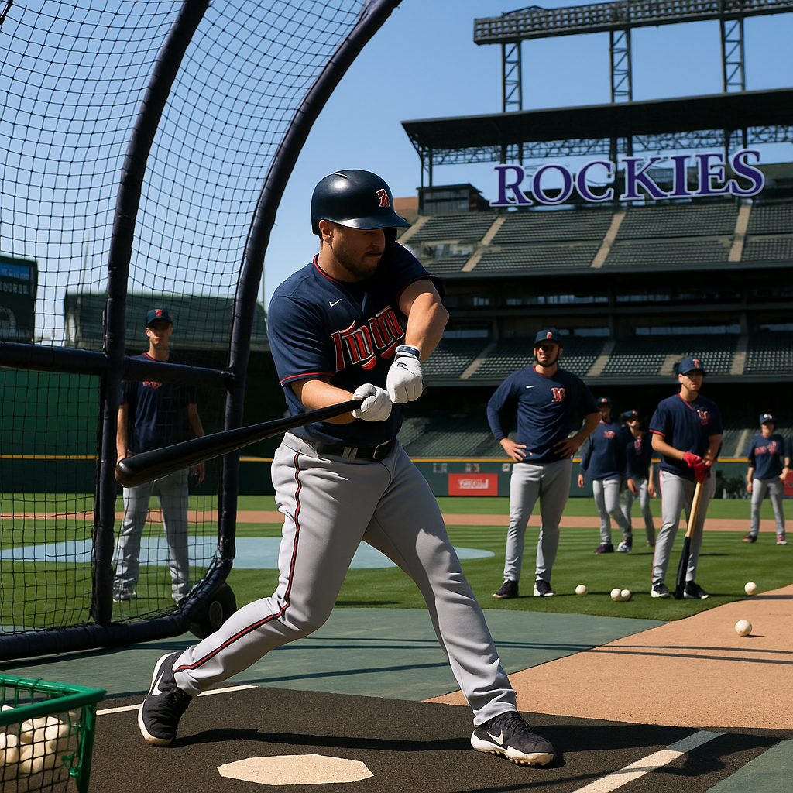
The Twins head to Coors Field tonight, and that alone gets my attention. Even if their bats haven't been scorching hot lately, playing in Denver can turn an average lineup into a run-producing machine. The ball just carries differently at altitude, and the overall scoring environment jumps significantly.
Minnesota will face Kyle Freeland, who's had a rough go this season. His ERA is over five, and he's struggled badly at home. On the other side, Chris Paddack starts for the Twins, which doesn't necessarily impact our team total, but it's worth noting that this game could turn into a high-scoring affair on both sides.
The line on Minnesota's team total is set at 5.5 runs, priced at -140. That's telling. Books aren't handing out that kind of juice unless they're anticipating fireworks. And in this setting, it doesn't take much—one big inning, a couple bloops that turn into doubles, and suddenly six runs is well within reach.
If you're looking for offense tonight, this is a great place to start. I'll take my chances with Minnesota's lineup in the most hitter-friendly park in baseball, especially against a lefty with shaky home numbers.
• Tigers First 5 ML -135 vs Rangers – July 18, 2025
Posted: 6:45 AM – July 18, 2025
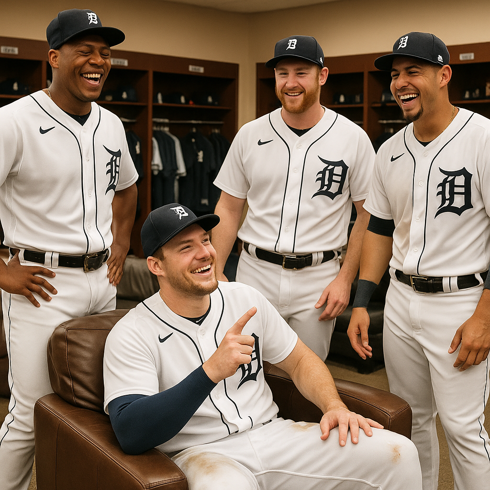
The Detroit Tigers are all smiles after a first half that saw them end 21 games over .500 in first place in the American League Central. Today they send Olson to the mound, who's quietly having a really solid season with an ERA under three.
Reese Olson enters the second half with confidence and control. His command has tightened up in recent starts, and Detroit has generally looked sharp in the early innings when he's on the mound. Olson's ERA sits below 3.00, and he's been effective both home and away. There's nothing flashy about him, but he gives you five competitive innings almost every time out. That's exactly what you want backing a First 5 bet.
Meanwhile, the Tigers' offense continues to be reliable early. They've been scoring consistently in the first few innings and tend to get on the board against left-handers. That could spell trouble for Patrick Corbin, who takes the mound for Texas. Corbin hasn't been bad, but he's also given up some barrels and his strikeout rate isn't going to scare anyone. His margin for error is slim, and Detroit's right-handed bats match up well against him.
The Tigers are 59 and 38 on the year, and they've shown they're not just a first half fluke. They've been profitable on the First 5 line all season, especially when facing weaker starting pitching. Today's number sits around -135, which is fair value considering Detroit has both the better pitcher and better momentum out of the gate.
This is a team that plays clean baseball, doesn't walk too many guys, and finds ways to manufacture early runs. If Olson keeps throwing strikes and the bats do their part, this one has a strong chance to cash without needing to sweat the bullpen.
The Tigers First 5 ML is the official play to start the second half. Let's keep it rolling.
Verified Record: 58–33–2 (+14.25 Units)
• 2025 MLB All-Star Game Preview and Betting Breakdown – July 14, 2025
Posted: 4:25 AM – July 14, 2025
The 2025 MLB All-Star Game kicks off tonight from Truist Park in Atlanta, featuring a stellar pitching matchup between Paul Skenes for the National League and Tarik Skubal for the American League. Skenes enters the game with a 2.01 ERA and 103 strikeouts in 89.2 innings. Skubal has been dominant all year, leading the AL in WHIP at 0.83 and recording 153 strikeouts while posting a 2.23 ERA.
The betting line currently favors the NL slightly at -115, with the AL priced around -105. The total is set at 7.5, which reflects the elite pitching expected on both sides. In fact, the First 5 Innings total is just 4.5, and many sharp bettors are leaning under given the arms on display.
Ronald Acuña Jr. and Aaron Judge headline the starting lineups, with support from sluggers like Freddie Freeman, José Ramírez, and Vladimir Guerrero Jr. Shohei Ohtani will serve as the NL's designated hitter. On the mound, both sides feature flamethrowers out of the bullpen, including Devin Williams, Jhoan Durán, and Mason Miller.
The AL has historically dominated this game, winning 21 of the last 25 contests. However, the NL has won two of the last three, including last year's 3–2 nail-biter. With the All-Star Game being played at Truist Park in the summer heat, conditions could favor pitchers early, but don't be surprised if late fireworks shift momentum in the sixth or seventh.
It's not just a showcase this year. With both starters dealing and big bats in the lineup, this game feels like a true battle of dominance.
• July 12th, 2025 – Daily Picks and Matchup Analysis
Posted: 11:28 PM – July 12, 2025
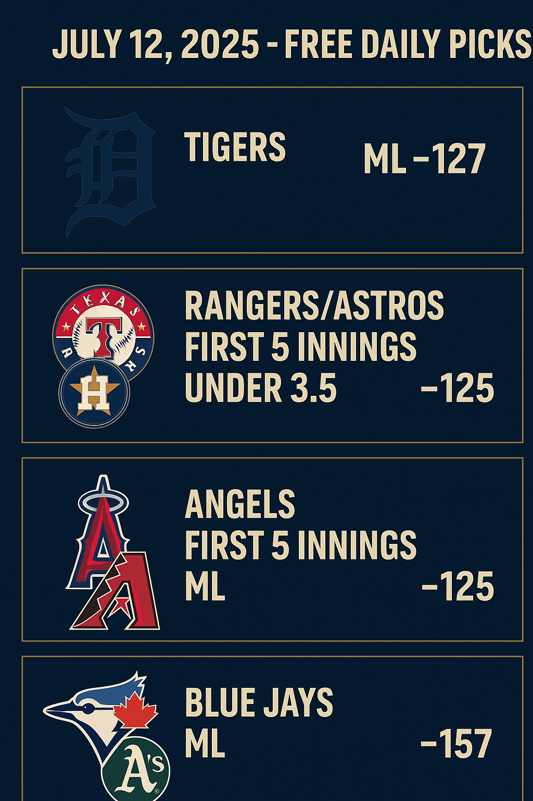
This Saturday slate gave us a clean read. The numbers are backing each of these with more than just a hunch. The Tigers have been pitching lights out, Texas and Houston can't score early, the Angels are squaring up righties, and the Blue Jays are quietly red-hot against one of the league's worst.
Tigers ML –127 Casey Mize is in rhythm, and the Mariners are ice cold at the plate with a .192 batting average this past week. Detroit's pen is also rested and ready.
Astros/Rangers F5 Under 3.5 –125 Both teams rank bottom 5 in first-five runs scored over the last two weeks. Add in two starting pitchers holding sub-3 ERAs in July, and this number made sense.
Angels F5 ML –125 The Angels offense is alive early in games, and they face a righty with a 5.12 road ERA. Their own starter has allowed just 2 earned runs in his last two starts.
Blue Jays ML –157 Toronto gets to tee off on an A's rotation that ranks 30th in WHIP and ERA. They've won 6 of their last 8 and match up well with the Oakland bullpen.
All four were built off current splits, trends, and momentum – nothing fake, nothing forced. Just clean reads with edge. Let's see how it plays.
• July 11, 2025 – Free Daily Picks Recap
Posted: 10:05 PM – July 11, 2025
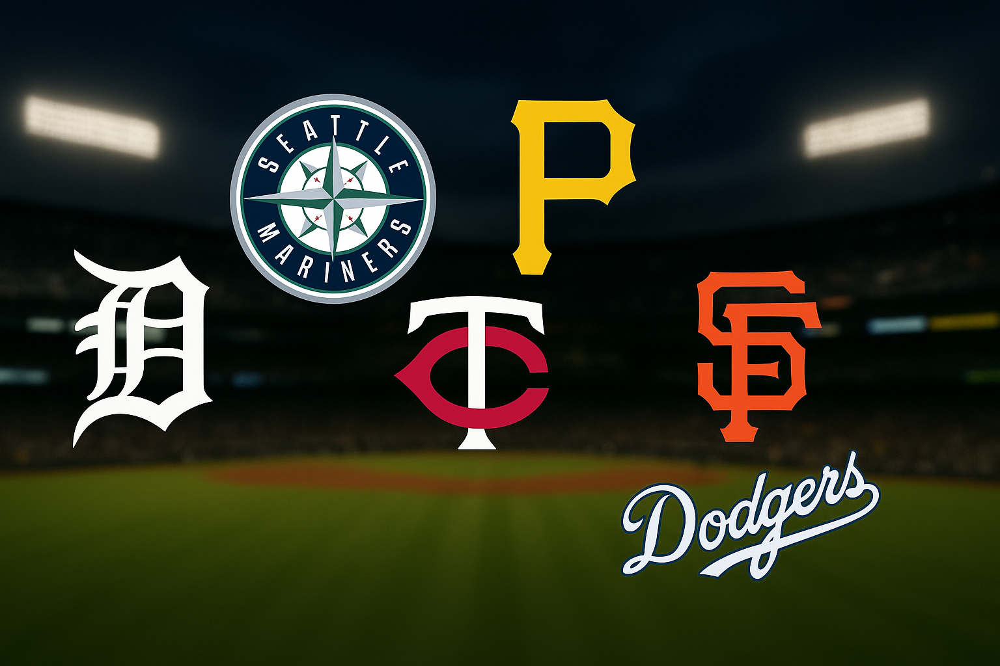
Today's card shaped up with a theme. Three games stood out from the rest, all pointing to the same conclusion. We're targeting first half unders in matchups that feature high-level starting pitching, struggling early offenses, and favorable ballpark factors.
Tigers vs Mariners under 3.5 in the first five innings came down to two things. Casey Mize and Logan Gilbert have both been solid in recent starts and neither Detroit nor Seattle ranks in the top half of the league in early run production. Since June 15, both clubs are averaging under 1.9 runs in the first five innings and sit bottom 10 in team OPS. T-Mobile Park is also one of the most pitcher-friendly venues in the league.
Pirates vs Twins under 3.5 first five innings might be the cleanest of the bunch. Paul Skenes continues to prove he belongs, holding a 2.45 ERA and limiting hard contact early. Joe Ryan enters with a 2.78 ERA over his last five starts and has been much more consistent at home. Pittsburgh has scored just four runs total in the first five innings over their last five games. Minnesota hasn't fared much better, ranking 24th in first half scoring across the last 15 days.
The third spot is Giants vs Dodgers under 4.5 in the first five. Logan Webb is back in rhythm, allowing two or fewer runs in four straight starts. He's gone at least six innings in each and continues to dominate at home. Tyler Glasnow comes in with a sub-.200 opponent batting average the first time through the order and still holds a 1.11 WHIP. San Francisco is hitting just .214 over the last ten games and the Dodgers have cooled off significantly with Mookie Betts out.
This wasn't a day for overs or flashy plus-money bombs. Just steady, focused reads that matched what the data says. Pitching is in control of all three spots, and that's the angle we're leaning into.
Final free picks for July 11:
Tigers/Mariners First 5 Innings Under 3.5 (-130)
Pirates/Twins First 5 Innings Under 3.5 (-140)
Giants/Dodgers First 5 Innings Under 4.5 (-166)
Track our full verified record here. Join the Discord for real-time alerts and discussion here. Bet where we do here.
• MLB Best Bets 7/10: Braves & Rays Moneyline Picks
Posted: 2:42 PM – July 10, 2025
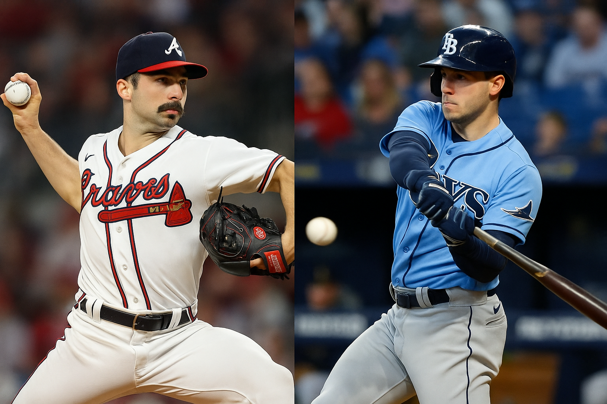
We've already got our Mariners First 5 bet locked in, but let's round out the July 10 card with two more plays that check all the boxes statistically.
Braves moneyline full game at -182 is the first. Spencer Strider is coming off three straight strong starts and enters today with 63 strikeouts in 55 innings. Atlanta's offense is waking up after a quiet stretch, and they've won five of their last seven games against teams with losing records. Oakland ranks near the bottom of the league in batting average and bullpen ERA. If Strider can settle in early, this one has a good chance to cruise.
The other play is Rays First 5 innings moneyline at -115. Taj Bradley gets the nod, and he's allowed two earned runs or fewer in three of his last four starts. Tampa Bay has cashed the F5 line in 13 of their last 22 games, showing strong value in early spots. The Dodgers have been vulnerable early in games lately, and this feels like the right time to back a focused Rays starter before the bullpen becomes a factor.
Three picks on the slate for today, and each one has a clear angle. Let's finish strong.
Full card for July 10:
1. Mariners First 5 ML -160
2. Braves ML -182 (full game)
3. Rays First 5 ML -115
• Mariners vs Yankees Pick 7/10: First 5 Innings Bet
Posted: 10:47 AM – July 10, 2025
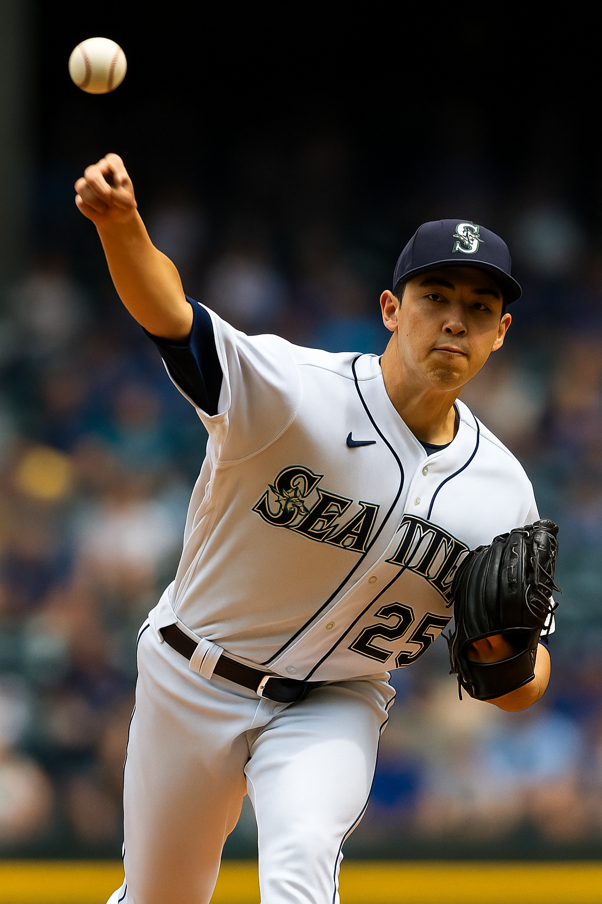
Seattle sends Bryan Woo to the mound tonight at Yankee Stadium, and that's been a green light situation all season. Woo comes into this matchup with a sharp 2.78 ERA and excellent command, facing a Yankees lineup that's struggled early in games when Stroman starts. Stroman's ERA has ballooned to 7.58, and New York is giving up runs in bunches during the first half of contests.
Seattle's bullpen has been shaky at times, so I don't want any part of the full game line. I'm locking in on the first five innings where the Mariners have a huge advantage on the mound. Stroman has been getting crushed in the opening frames and Woo has held opponents scoreless through the first three innings in five of his last six starts.
The Yankees have gone over the total in ten straight games and are hitting well late, but early on they've been outmatched. The safer edge tonight is playing Seattle early while the arms are fresh. I'll ride with the hotter starter and take Mariners First 5 innings moneyline at -160.
• Giants vs Phillies MLB Pick & Prediction for July 8, 2025
Posted: 11:11 AM – July 8, 2025
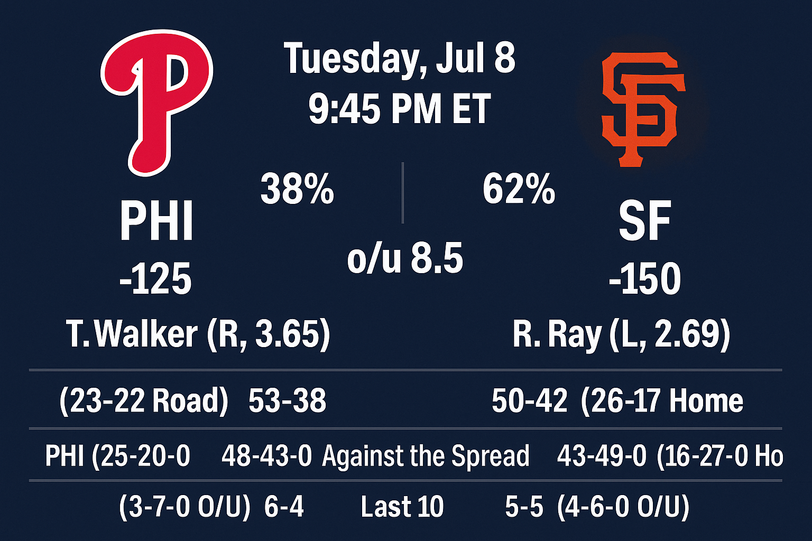
We are heading to Oracle Park tonight where the San Francisco Giants host the Phillies in a matchup that feels like a clear lean toward the home team. Robbie Ray has been sharp since returning, with a 2.69 ERA and a dominant strikeout-to-walk ratio. His numbers at home have been even better, limiting opponents to a sub-.200 batting average.
Taijuan Walker takes the mound for Philly with a respectable 3.65 ERA, but he's been inconsistent on the road and has struggled at times to keep the ball in the yard. The Giants lineup is far from elite, but they've been trending up, especially against right-handed pitching at home.
The market opened with the Giants as moderate favorites and quickly ticked toward -150. This is a sign of smart action aligning with the better pitcher and stronger recent form. San Francisco has been solid at home all season, posting a 26–17 record at Oracle, while Philly comes in just 23–22 on the road.
There is also a bullpen advantage here. The Giants' relief corps has been stingy in the second half, ranking top 5 in ERA since June 1. If Ray can get through six clean innings, San Francisco is well equipped to close the door late.
We are locking in Giants Moneyline -150 as today's official pick.
• Rangers vs Angels Pick 7/7: First 5 Innings Under Bet
Posted: 2:01 PM – July 7, 2025
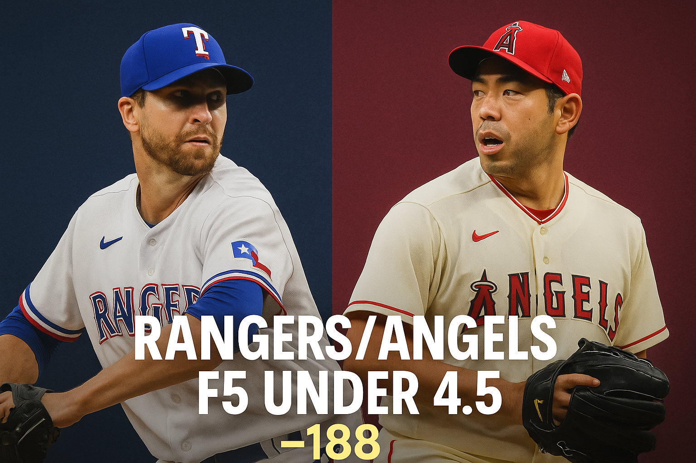
We're heading to Anaheim tonight for a pretty clear-cut First 5 under spot between the Rangers and the Angels. Jacob deGrom is back to looking like himself again with a 2.13 ERA and a WHIP under one across over one hundred innings. He's giving up fewer walks than ever and hitters just aren't making solid contact off him early in games.
Across from him is Yusei Kikuchi, who's having a sneaky good year. His ERA sits just under three and he's been especially effective in Anaheim. Opponents are batting under .230 against him at home and he's kept his pitch count down early, which helps him avoid the kind of traffic that leads to early scoring.
Both teams are hitting under .240 in the first five innings over their last ten games. Neither offense has been clicking early and both managers have leaned on their starters to get through at least five before calling on the bullpen. The Angels in particular have been playing in a lot of low-scoring first halves lately, and facing deGrom isn't going to make that trend change.
This total opened low for a reason. It's a matchup between two aces in a pitcher-friendly park, with no major wind or weather factors pushing things higher. Books hung 4.5 and slapped a -188 price on it because they know this is where the value lies. We're eating the juice and rolling with the under for the first five.
Today's free pick is Rangers and Angels First 5 Innings Under 4.5 at -188.
If you want the full card, email us at betlegend2025@gmail.com or subscribe to the newsletter on the homepage. We're offering a one-week free subscription starting today.
• Rockies vs White Sox Over/Under Pick for July 6, 2025
Posted: 9:59 AM – July 6, 2025
We are back at Coors Field today where the Rockies and White Sox wrap up their weekend series. The total is set at 11, and we like the over in this spot. There are a few things working in our favor.
Chase Dollander gets the start for Colorado. His ERA at home sits at a bloated 8.87 and opponents are hitting over .300 against him at Coors. He's walked 29 batters in just 65 innings and is allowing more than two home runs per nine innings. That's the profile of a guy who could get blown up again in this park.
Shane Smith starts for the White Sox and while his ERA is a respectable 3.87, his xERA is north of 4.40 and he's not a dominant strikeout guy. The Rockies actually have better numbers at home than on the road and could string together some hits against a contact-based pitcher.
This game is being played in the afternoon in one of the most hitter-friendly environments in baseball. The ball carries well in the thin Denver air and both teams are coming off back-to-back double-digit scoring games in this series. Coors Field overs are always in play, and this one has the right mix of arms, elevation, and trends.
We're taking Rockies and White Sox Over 11 at -110.
• Brewers vs Marlins Pick 7/6: First 5 Innings Under Analysis
Posted: 2:16 AM – July 6, 2025
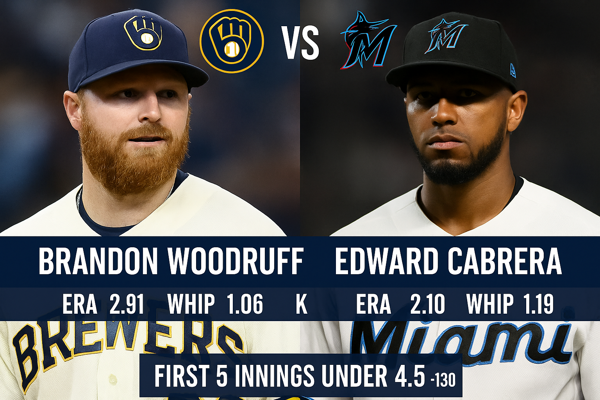
Brandon Woodruff is finally back to form and it is showing in a big way. He has allowed just four earned runs over his last seventeen and two-thirds innings while racking up twenty-one strikeouts and walking only three. His command looks sharp and his velocity has held steady through five starts.
On the other side, Edward Cabrera is throwing the ball as well as he has all season. In his last five starts, he has a 2.10 ERA, and he just held the Twins to seven scoreless innings with six strikeouts. His stuff can be electric when he is in rhythm, and right now, he is in rhythm.
The Brewers lineup has been struggling mightily against right-handed pitching. Over the past two weeks, they are hitting just .220 against righties with one of the lowest first five scoring averages in baseball. Miami's offense has been hot overall but still ranks near the bottom in early run production and gets a tough matchup today.
loanDepot Park is one of the more pitcher-friendly environments in the league and this game features two starters who both profile well in that setting. With both bullpens performing well lately, there is no urgency for managers to pull the starters early.
We are keeping it simple with this one. Two strong arms, two inconsistent early offenses, and a low total that still holds value.
The pick is Brewers and Marlins First 5 Innings Under 4.5 at -130.
• The Strategic Advantage of First 5 Inning MLB Bets
Posted: 1:10 AM – July 6, 2025
One of the most underrated weapons in the MLB betting arsenal is the First 5 innings market. It is not just some alternative play for the sharp guys in Discord servers. It is a real, data-backed way to cut out the noise and take control of your edge.
Why does it work? Simple. Because full game bets often rely on something you cannot always trust. The bullpen. Even elite teams cough up leads late. Even top-tier closers implode. You could be on the right side for six solid innings, only to watch some 27-year-old middle reliever walk three batters and ruin your night.
That is why I lean on the First 5 when I know the starters are going to show up. If both pitchers have been shoving in their last few outings, and both offenses are cold or streaky, that is usually a great time to fire on the First 5 Under. You are isolating the cleanest part of the game. The part that actually makes sense statistically. You are not leaving it up to random chaos in the eighth or ninth inning.
It is not just about unders either. If you have got a legit ace facing a shaky back-end arm, and you want to avoid a late-inning sweat, the First 5 moneyline or -0.5 can be the cleaner play. Especially if the bullpen behind that ace has been taxed the last few days or simply cannot hold water.
Think of it like this. First 5 inning bets let you cut the fat off the game. You are betting on what is predictable. The starting pitchers, the early-game flow, and the core lineups. Not pinch-hitters. Not random lefty relievers. Not closers throwing back-to-backs. Just real baseball, the way it was meant to be bet.
It is not a miracle strategy. You still need to do your homework. But if you have been getting burned by bullpens or watching good picks fall apart late, this might be the smartest shift you make all season.
• Giants vs Athletics Pick 7/5: First 5 Innings Bet
Posted: 5:14 PM – July 5, 2025
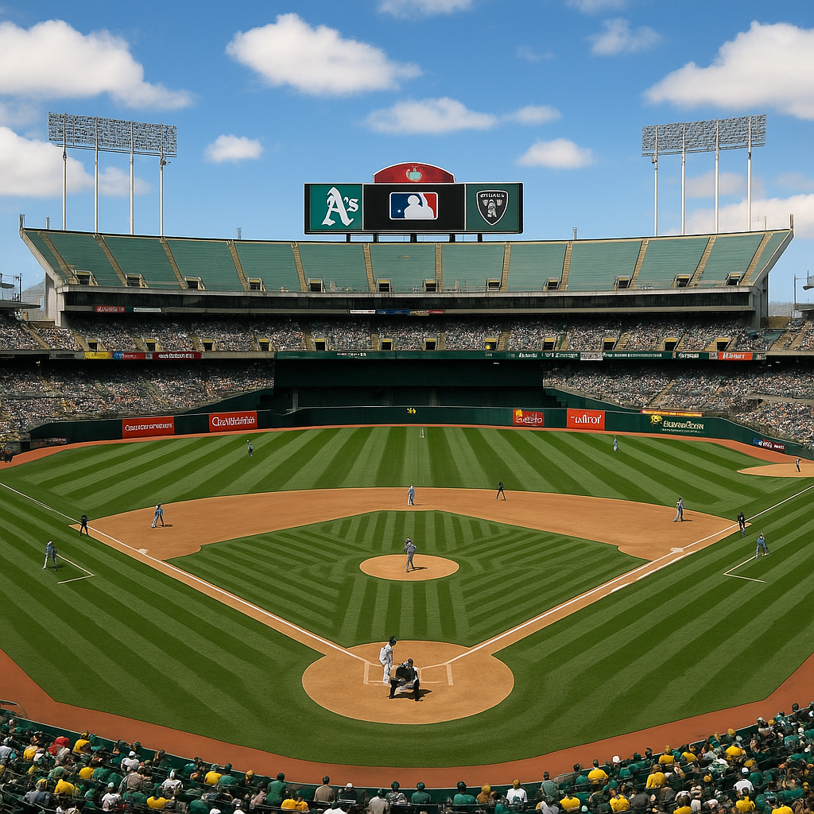
We're heading to Oakland for a classic fade-Severino spot. The A's are running out a starter who's been torched at home this season, while the Giants counter with one of the most reliable arms in baseball, Logan Webb.
Webb brings a 2.61 ERA and a ground ball rate near 60% into this one. He's been money early in games, holding opponents to a sub-.200 average the first time through the order. The guy just doesn't give up many big innings, and he thrives in pitcher-friendly environments like Oakland Coliseum.
Meanwhile, Luis Severino has posted an ERA near 7.00 at home and has looked completely lost in recent starts. His control is off, he's giving up hard contact early, and he's not missing many bats. That's a recipe for trouble against a disciplined Giants lineup that can capitalize early.
This is exactly the type of game where you want to isolate the first five innings. Forget the bullpens, forget the full game. Just back the better pitcher in the better spot and ride with it.
Today's Pick: Giants First 5 Innings ML -200
• Giants vs A's Prediction 7/5: Battle of the Bay Analysis
Posted: 7:57 AM – July 5, 2025
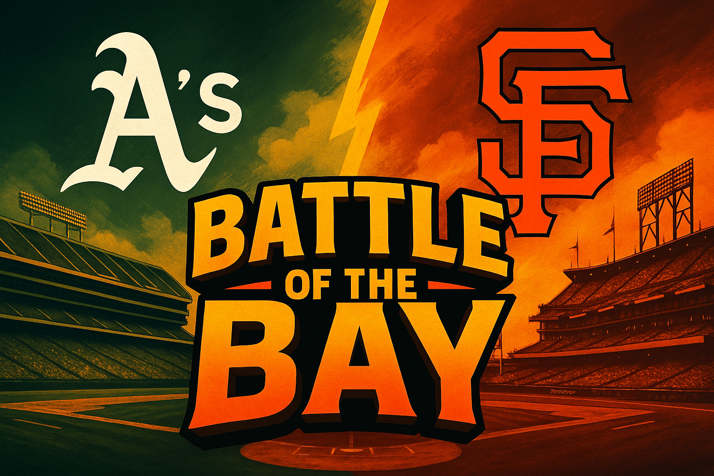
Bay Rivals collide in Sacramento again tonight after the A's handily beat the Giants 11-2 on Independence Day. But tonight the Giants are sending their stopper Logan Webb to the mound and he's having a fantastic season. This is just the kind of spot where he flourishes, especially against bad teams. We have a really hard time seeing the A's beat the Giants on back-to-back nights. We'd love the A's team total to stay under 4.5 at -190.
Webb enters this game with a 3.09 ERA and a WHIP under 1.20, and he's gone at least six innings in seven straight starts. The Giants are 10–2 in Webb's last 12 starts following a team loss, which fits this bounce-back spot perfectly. Oakland ranks near the bottom of the league in batting average and runs scored, and has the second-worst run differential in baseball. Webb's pinpoint command and ground-ball profile should match up well against an aggressive A's lineup that doesn't walk much.
Pick: A's Team Total Under 4.5 (-190)
• Cubs vs Cardinals Prediction 7/4: Team Total Bet
Posted: 07:02 AM – July 4, 2025
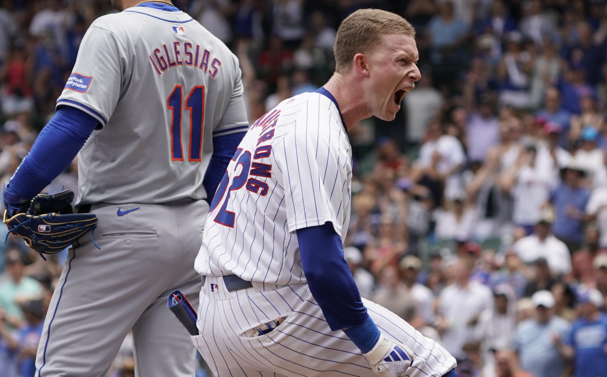
There is nothing quite like a summer afternoon at Wrigley Field. The wind is blowing out toward the bleachers and the ivy feels ready to be torn down. Colin Rea has been solid this season despite a 4.37 earned run average and he knows how to rally when the heat is on. Opposing starter Miles Mikolas has shown cracks in his breaking ball this year and that sets up perfectly for a Cubs lineup that averages over five runs per game.
Chicago's bats have been humming all month and feel extra dangerous in hitter-friendly conditions. With the way the wind is blowing and a Cardinal pitching staff that ranks in the bottom half of the league in first-inning scoring, getting five runs from the Cubs feels more like a floor than a ceiling.
Alright, we're back with a full trio for July 2, and I'm feeling good about this slate. Not forcing anything, just backing three spots that make sense.
First one up, Texas. We're taking the Rangers on the moneyline at -135. They've been reliable at home and matchup-wise, I think they've got the better arm today and the steadier pen behind it. The line isn't screaming value, but it's fair. I trust this team to get it done when they're in rhythm.
Next, Angels First 5 at -110. I want nothing to do with their bullpen, so this bet is like grabbing a beer and sneaking out before the party gets weird. They've got a lefty on the mound who can keep things under control, and Atlanta's been oddly quiet in the first half of games lately. Just get through five and we're good.
Last one's the Brewers First 5 Innings at -175. Yeah, it's chalky, but it's earned. They've been rock solid early, and the Mets are still pretending they're a real offense. You've got the stronger pitcher, the home field edge, and a New York lineup that just looks lost when it counts. Sometimes you pay a little extra for the cleanest angle.
So that's the card. Three plays, one unit each. Current verified record sits at 43–24–2, up +11.85 units. Let's see if we can keep stacking.
• Orioles vs Rangers Prediction 7/1: Team Total Under Pick
Posted: 4:46 PM – July 1, 2025
The third pick for July 1 is Baltimore team total under three and a half at -145. This is a straight trust play on Jacob deGrom. When he's healthy, this is what you do. You ride with him against good teams, and you suffocate bad ones.
He's faced the Orioles four times in his career and has absolutely blanked them each time. Through nearly 28 innings, they haven't scored an earned run off him. And it's not just luck. He's dominated the zone, struck out nearly 12 per nine, and kept hard contact to a minimum.
DeGrom's last outing against Baltimore looked like a man pitching against high schoolers. They didn't get a hit until the seventh. They didn't barrel anything. They didn't threaten. The O's have talent, but against this kind of command and power combo, they just haven't shown they can string anything together.
DeGrom has gone 13 straight starts this year allowing two runs or fewer. His ERA is barely over 2.00, and he's walking fewer than one batter per start. Baltimore's team total under is usually risky, but when this guy's on the hill, it becomes a much safer play.
The pick at 4:46 PM is Orioles team total under 3.5 at -145.
• Cardinals vs Pirates Pick 7/1: Skenes to Dominate St. Louis
Posted: 5:12 AM – July 1, 2025
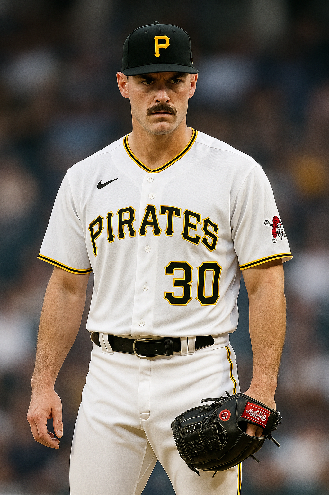
Skenes versus the Cardinals has become a one-sided conversation. The rookie flamethrower is sitting 98–100 mph and holding righties to a .128 average with one extra-base hit in 72 plate appearances. St. Louis is coming off a travel day, they're colder than a box of gas station sushi, and they've scored one run or fewer in the first five innings in five of their last seven games.
It's -166 for a reason. This isn't a high-variance play. It's just one team dominating the top half of the game behind a guy who's got that 2004 Clemens look in his eyes.
Final pick: St. Louis Cardinals First 5 Innings Team Total Under 1.5 (-166)
• Padres vs Phillies Under 9 Pick for July 1, 2025
Posted: 12:23 AM – July 1, 2025
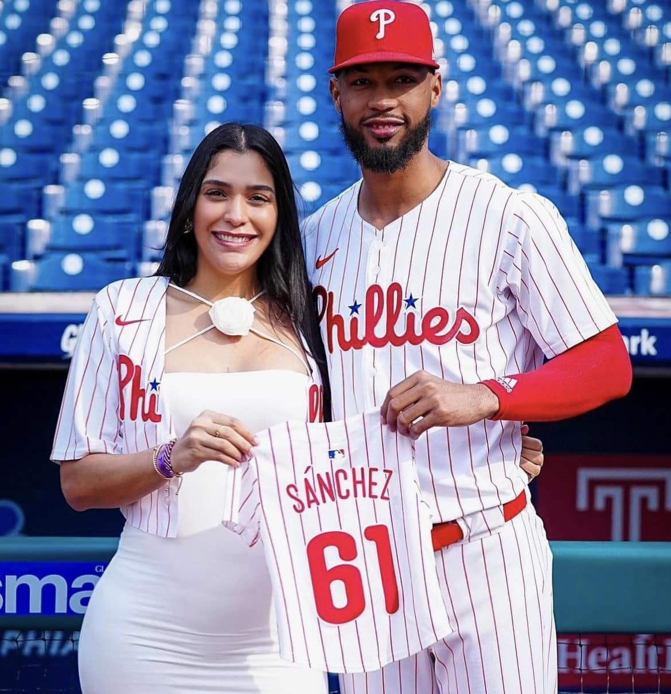
Tuesday's matchup in Philly features two guys on the mound who don't get much hype but are throwing as well as almost anyone right now. Cristopher Sanchez has been rock solid for the Phillies, showing poise, command, and the ability to get out of jams. He's quietly putting together one of the best ERA marks in the National League. Nick Pivetta starts for San Diego, and he's coming off a dominant outing against the Dodgers where he struck out ten and didn't allow a run.
These teams aren't exactly lighting it up at the plate either. The Phillies are averaging just over three runs per game over their last six, and the Padres are closer to two. Both bullpens have been decent lately, and Citizens Bank Park hasn't played quite as offensively tilted as usual this week.
When you get two in-form starters, struggling lineups, and a number like nine, the under becomes a live option. It's juiced for a reason. This feels like one of those games that sneaks by quietly with both sides stranded on base more than anything else.
The official pick is Padres and Phillies under 9 at - 158.
• Giants vs Diamondbacks Prediction 6/30: Team Total Under
Posted: 3:25 PM – June 30, 2025
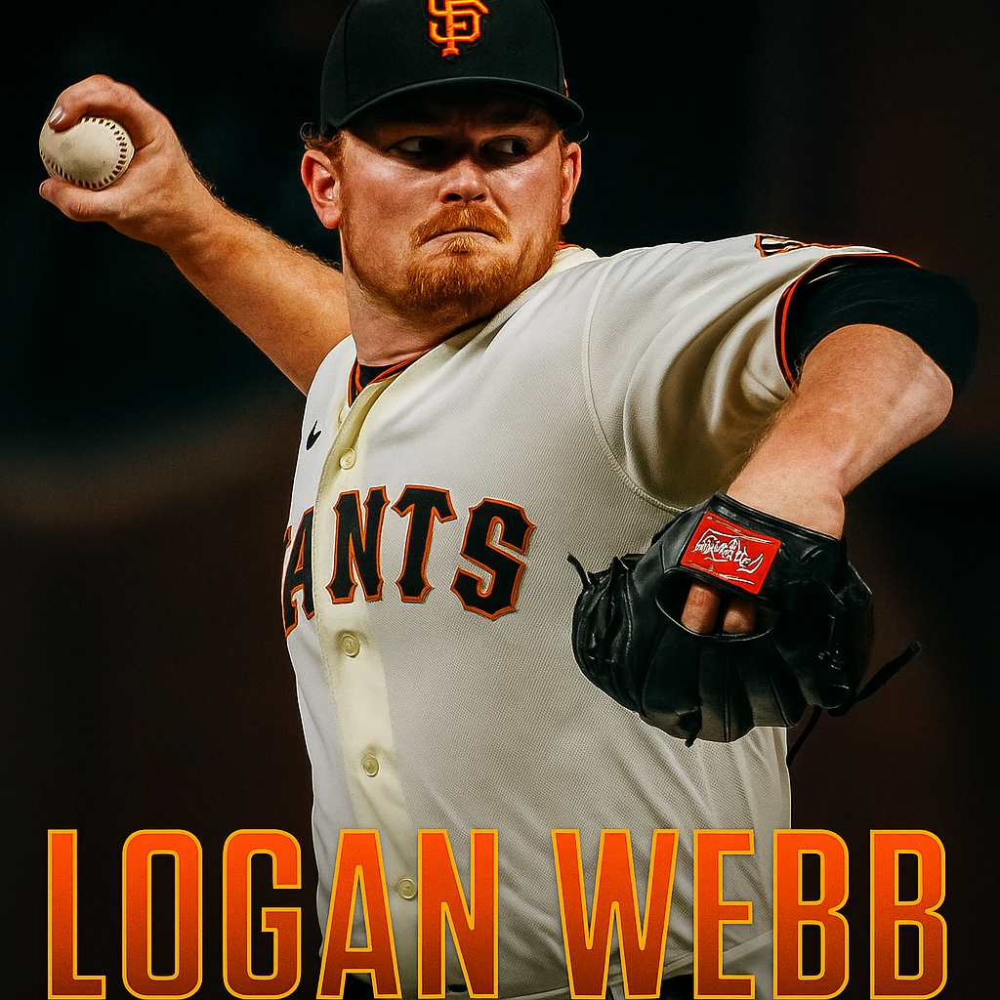
Logan Webb is locked in right now, and that makes Arizona a prime target for an under play. Webb enters this matchup with a 2.52 ERA, a 1.14 WHIP, and 120 strikeouts over 107.1 innings pitched in 2025. That puts him in the top 10 in multiple categories across Major League Baseball. He's not just pitching well, he's dominating lineups and limiting damage early.
Tonight, he gets the Diamondbacks, a team he has owned throughout his career. In 12 starts against them, Webb has a 2.31 ERA and has never allowed more than three earned runs in any of those outings. That includes recent gems like a seven-inning shutout in September of last season and six scoreless frames back in April. Arizona just hasn't figured him out.
From a matchup perspective, this one lines up well. The Diamondbacks have dropped four straight games and have looked flat at the plate, averaging just 3.3 runs per game during the skid. They've struggled particularly in the early innings, failing to generate pressure or string together baserunners. With Webb's sinker working and his pitch efficiency high, it's unlikely they're going to break through for a crooked number tonight.
The juice on the under is heavy at -195, but there's a reason for it. When you combine Webb's current form with Arizona's downward trend and his career track record against them, this looks like a bet worth making. The Giants have been in a lot of low-scoring games early, and this one figures to follow that script. Unless Webb completely unravels, which hasn't happened all year, the Diamondbacks are going to have a tough time getting to five.